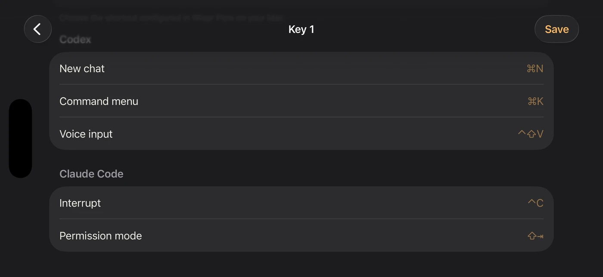

Relaypad support
Relaypad pairs an iPhone running iOS 17 or later with a Mac running macOS 14 or later. The iPhone connects directly to the Mac on your local network. Pair your devices.
Connection and input
My Mac is missing from Pair Mac
Open Relaypad for Mac and click Start receiver. Connect both devices to the same local network. Allow Relaypad in each device’s Local Network privacy settings. Some guest Wi-Fi networks isolate devices from each other. Try a network where the devices can communicate.
The phone says “Enable input”
On the Mac, go to System Settings → Privacy & Security → Accessibility. Allow the copy of Relaypad for Mac you are running. Open an empty editor, click inside it from the phone, then tap 1, 2 and 3.
The code changed, or another phone is connected
The receiver accepts one phone at a time. Disconnect the active phone, or stop and restart the receiver. To revoke a shared code, click New code on the Mac and pair with the replacement code. Under Pair Mac on iPhone, select the Mac and use Forget saved code to clear the old credential.
The connection stopped after sleep
The receiver stops when the Mac sleeps or its user session switches. Click Start receiver and open the iPhone app. A previously paired phone retries its saved connection while the receiver is available.
Gestures and shortcut keys
Slide one finger to move, tap once to click, and tap twice to double-click. Slide two fingers to scroll. Hold one finger still, then move it to drag. Use the Right click button for the secondary click.
Open the sliders button to remap any of the seven keys. Choose an individual key or a shortcut preset and save. Hold Fn, Control or Option while tapping another key to send a chord. The Mac app with keyboard focus receives it.

Voice dictation
For Mac dictation, use a shortcut configured in the dictation app and speak into its selected microphone. Wispr Flow supports a quick double-tap of its push-to-talk shortcut and a hands-free shortcut such as Fn+Space. Test the binding with your installed app. To use iPhone dictation, open Keyboard in Relaypad, use the system keyboard’s dictation button and tap Send. Wispr Flow hands-free guide.
Contact and bug reports
Open a GitHub issue with the iOS and macOS versions, device models, Relaypad versions, and what you expected to happen. Omit pairing codes and personal text. For sensitive findings, use the private reporting instructions in the contribution guide. Contact support · Security reports